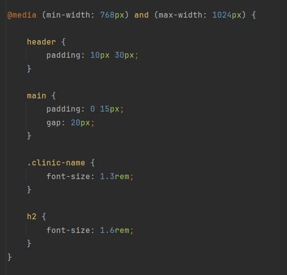
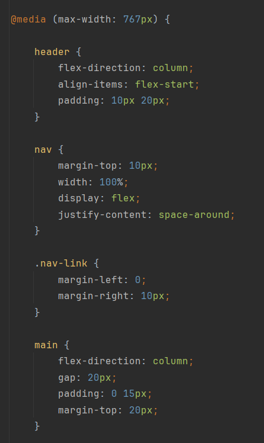

Тема: АДАПТИВНА ВЕРСТКА. МЕДІА-ЗАПИТИ. МЕТАТЕГ VIEWPORT. СТРАТЕГІЯ MOBILE FIRST.
Мета: Адаптивна верстка. Медіа-запити. Медіа-типи. Медіа-функції.Метатег viewport. Інструменти розробника. Стратегія Mobile First.
Посилання на репозиторії:
Посилання на живі сторінки:
Десктопна версія:
Десктопна версія - версія для великих екранів. У даному проєкті було виконано підхід "Desktop-First". Усі стилі та
розташування об'єктів моделювалися для великого екрану комп'ютера/ноутбуку.
Для даної реалізації не було використоно ніяких додаткових media-запитів. Основні стилі конструюються вигляд даного розміру
Планшетна версія:
Планшетна версія - версія для екранів менших від лептопних та більших від мобільних. За відповідною схемою і
будувався сам media-запит для даного розміру.
Для даної реалізації було використано логічний оператор "and" для реалізації "більше від _ та менше від _".
Таким чином основні параметри стилів такі як текст, кольори та інше залишаються незмінні, а налаштовується лише розмітна
сітка та розташування об'єктів на сторінці відповідно до розміру діапазону.
Приклад реалізації:

Мобільна версія:
Мобільна версія - версія для екранів мобільних телефонів. Через розповсюдженість мобільних телефонів та повсюдне їх використання мобільна версія для вебзастосунку
стала основною.
Mobile First — це стратегія, при якій розробка та дизайн сайту починається з найменшого екрану (мобільного телефону),
а потім поступово "покращуєте" та додаєте функціонал для більших екранів (планшетів, а потім десктопів).
Основна ідея полягає в пріоритезації. На мобільному пристрої обмежений простір. Це змушує зосередитися на найважливішому: ключовому контенті та
основних діях. Все зайве прибирається і залишаєте лише життєво необхідні елементи. Для більших екранів всж не просто розтягується цей контент,
а прогресивно покращується, тобто додаються другорядні колонки, більші зображення, складніші елементи навігації тощо.
Приклад реалізації:

Висновки:
У ході даної практичної роботи були отримані та покращені практичні навички роботи з адаптивною версткою. Також детально опрацьовано Медіа-запити, Медіа-типи та Медіа-функції.Було вивчено про стратегію Mobile First та інші існуючі стратегії розробки вебзастосункців.